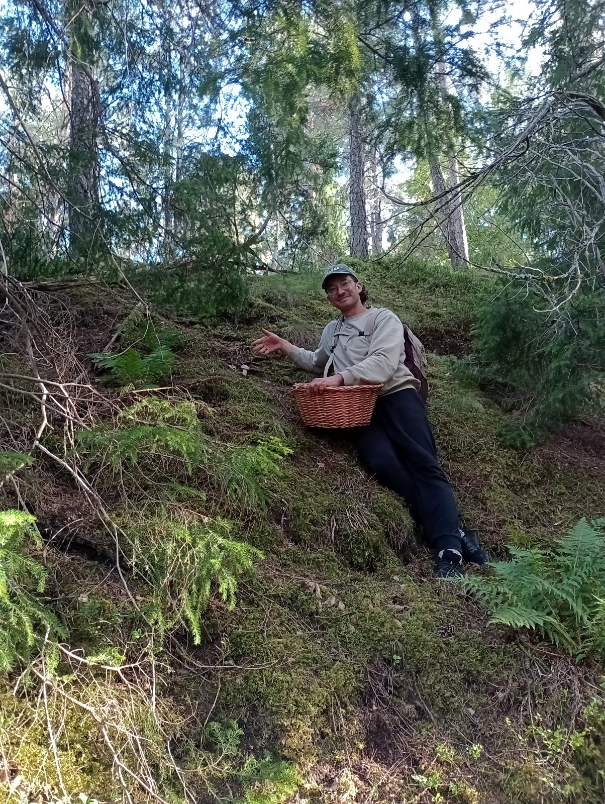

Najnowszy wpis
W polowaniu na grzyby najbardziej uwielbiam możliwość zanurzenia się w przyrodę i odkrywania jej przepastnych zakamarków. Nowe światy czekają w każdym zakątku lasu, a przewodnikiem po nich są nasze zmysły. Zapraszam do grzybowego królestwa!
